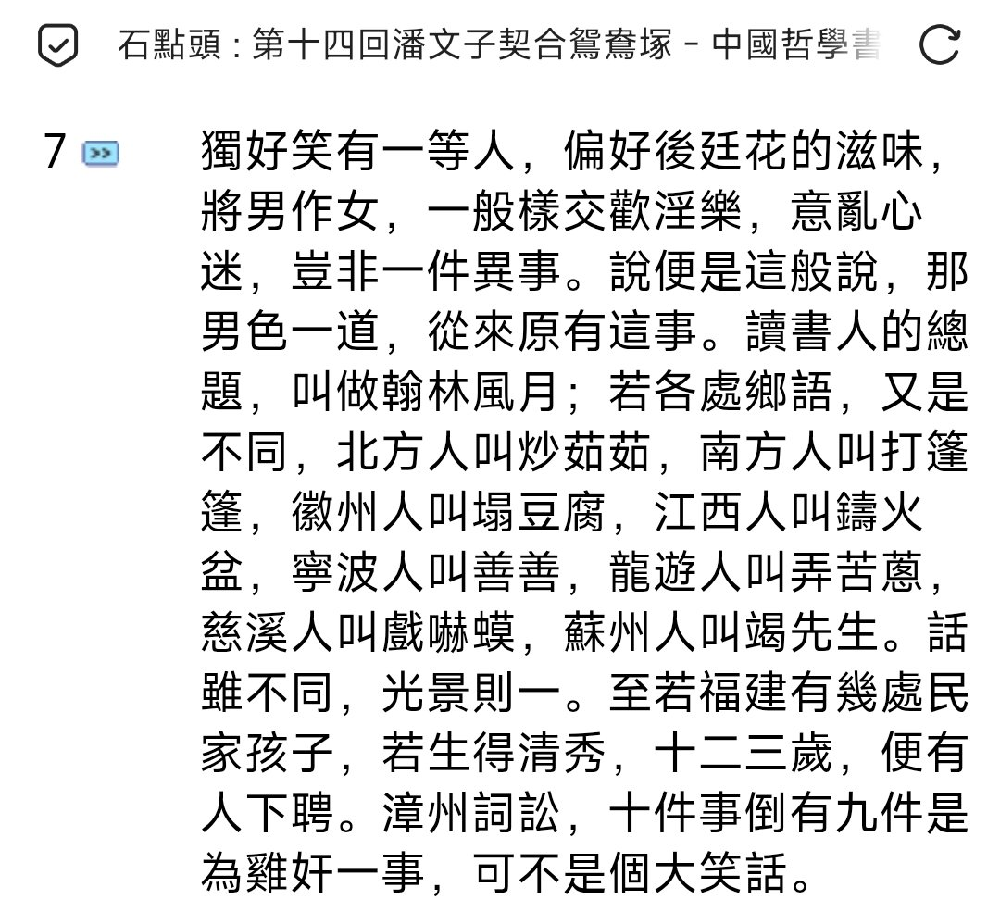

𝒂𝒎𝒃𝒆𝒓🏳️⚧️
@amber_digit2
RT @Liuzhuanzhao_CN: 《石點頭》是明代的一部市民通俗短篇白話小說集，一共14回，其中第14回是专门的男性同性间爱情故事，该回开篇就从南到北记录了一大堆当时的同性恋行话，更以漳州为例，说该地“詞讼，十件有九件与鸡奸有关”。直接反映了晚明时极为兴盛的男性同性爱风…

竱肇
@Liuzhuanzhao_CN
《石點頭》是明代的一部市民通俗短篇白話小說集，一共14回，其中第14回是专门的男性同性间爱情故事，该回开篇就从南到北记录了一大堆当时的同性恋行话，更以漳州为例，说该地“詞讼，十件有九件与鸡奸有关”。直接反映了晚明时极为兴盛的男性同性爱风气，以至于甚至深嵌于当地的法律诉讼与财产争夺中。 https://t.co/sVgZOADics